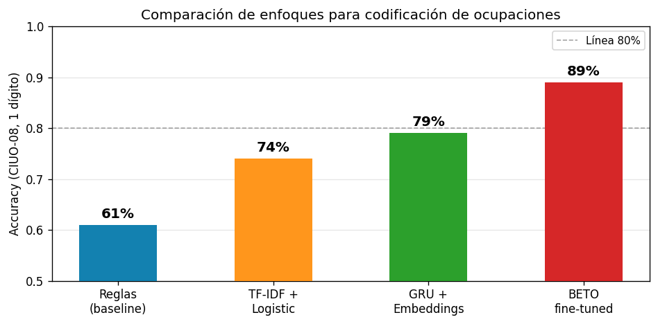

from transformers import AutoTokenizer, AutoModelForSequenceClassification
MODEL_NAME = "dccuchile/bert-base-spanish-wwm-cased"
NUM_LABELS = 10 # CIUO-08 a 1 dígito: grupos 1-9 + grupo 0
tokenizer = AutoTokenizer.from_pretrained(MODEL_NAME)
model = AutoModelForSequenceClassification.from_pretrained(
MODEL_NAME,
num_labels=NUM_LABELS
)
Transformers y Fine-Tuning
Junio 2026
Temario de hoy
El objetivo de esta clase es entender cómo funcionan los Transformers y cómo usarlos a través de fine-tuning para resolver problemas reales de procesamiento y análisis estadístico, viendo el ejemplo del Censo 2024.
- El problema que los transformers vinieron a resolver: Límites de las RNN y LSTM y la aparición del Transformer
- Mecanismo de atención: La idea central de la arquitectura
- Arquitectura Transformer: Bloque transformer, embeddings posicionales
- Pre-entrenamiento y fine-tuning: La lógica del transfer learning
- Modelos para español: BETO y la familia RoBERTa
- Aplicaciones en el CPV2024: Codificación de ocupaciones y actividad económica
- Ejercicio práctico: Fine-tuning de BETO con HuggingFace
El problema que los transformers vinieron a resolver
Límites de las RNN y LSTM
Las redes que vimos la clase anterior tratan cada entrada como independiente: no tienen noción de orden ni de contexto previo.
Para texto, eso es un problema: el significado de una palabra depende de su contexto.
Ejemplo de respuesta en actividad económica:
“Trabajo en una empresa que realiza minería de …”
En qué sector económico trabaja? La respuesta depende del contexto:
Minería de datos -> Actividades profesionales, científicas y técnicas Minería de cobre -> Explotación de minas y canteras
Límites de las RNN y LSTM
Antes de los transformers (2017), el estado del arte para solucionar este problema eran las Redes Neuronales Recurrentes (RNN) y su variante Long Short-Term Memory (LSTM).
Estas resuelven el problema con una idea simple: además de procesar la entrada actual \(x_t\), mantienen un estado oculto \(h_t\) que “recuerda” lo que se procesó antes:
\[h_t = f(W_x \, x_t + W_h \, h_{t-1} + b)\]
El estado oculto \(h_t\) es la “memoria” de la red: se actualiza en cada paso y pasa al siguiente. Al final de la secuencia, \(h_T\) resume todo lo leído.
El problema de las RNN: memoria de largo alcance
Otro ejemplo:
“El encuestado declaró trabajar como técnico electricista, realiza tarea tareas de instalación de cableado eléctrico y otras similares. Trabaja en una empresa constructora, pero también de forma independiente los fines de semana”
- Cuando el modelo llega a la última palabra, ¿cuánto recuerda de “técnico electricista”?
- El estado oculto tiene que “comprimir” todo lo anterior en un vector fijo.
- La información se diluye a medida que la secuencia crece.
El problema de las RNN: memoria de largo alcance
La Long Short-Term Memory (LSTM) agrega un segundo vector de estado, la celda \(c_t\), protegida por tres compuertas aprendibles:
Las compuertas permiten que la celda mantenga información útil por muchos pasos sin degradarse.
Las LSTM mitigan el problema, pero no lo eliminan. Para secuencias largas o grandes volúmenes de datos, el costo computacional también escala mal: no se pueden paralelizar fácilmente.
La solución: atención directa
¿Y si en vez de leer de izquierda a derecha y acumular un estado, el modelo pudiera mirar directamente cualquier parte del texto, independiente de la distancia, cuando necesita entender qué dice un texto?
Esa es la idea del mecanismo de atención: en vez de comprimir todo en un estado oculto, el modelo aprende a ponderar cuánto importa cada token para producir la representación actual.
La estructura de los transformers permite:
- Capturar dependencias de largo alcance sin pérdida de información.
- Paralelizar el cómputo (todos los tokens se procesan a la vez).
- Escalar a datasets masivos y modelos con billones de parámetros.
El mecanismo de atención
Intuición
La atención es un mecanismo de búsqueda suave aprendible (entrenable).
Cada celda muestra cuánto “atiende” la palabra del eje Y a la palabra del eje X al momento de traducir.
DIAGRAMA
Queries, Keys y Values
La atención se implementa con tres matrices aprendibles. Para cada token en la secuencia:
- Query (Q): “¿Qué información necesito?” — lo que estoy buscando.
- Key (K): “¿Qué información tengo yo?” — lo que cada token ofrece.
- Value (V): “¿Qué información entrego si me eligen?” — el contenido que se pasa.
La atención entre Q y K produce un peso para cada par de tokens. Esos pesos se aplican sobre V:
\[\text{Attention}(Q, K, V) = \text{softmax}\!\left(\frac{QK^\top}{\sqrt{d_k}}\right) V\]
El factor \(\sqrt{d_k}\) escala los productos para evitar que el softmax sature con valores muy grandes.
Queries, Keys y Values
La atención se implementa con tres matrices aprendibles. Para cada token en la secuencia:
- Query (Q): “¿Qué información me haría cambiar la forma en que entiendo un token?”
- Key (K): “¿Qué información es relevante para el significado de otros tokens?”
- Value (V): “¿Qué información traspaso a otros tokens, si es que me”eligen”?“
Atención: ejemplo paso a paso
# Secuencia de 4 tokens, dimensión 8
T, d_model = 4, 8
d_k = d_model # por simpleza
torch.manual_seed(0)
Q = torch.randn(T, d_k)
K = torch.randn(T, d_k)
V = torch.randn(T, d_k)
# Scores: qué tan relevante es cada token para cada otro
scores = Q @ K.T / d_k**0.5 # (T, T)
weights = torch.softmax(scores, dim=-1)
print("Pesos de atención (4×4):")
print(weights.detach().numpy().round(3))
# Salida: suma ponderada de V
output = weights @ V # (T, d_model)
print("\nShape salida:", output.shape)Pesos de atención (4×4):
[[0.121 0.741 0.106 0.032]
[0.258 0.265 0.171 0.307]
[0.336 0.017 0.187 0.46 ]
[0.203 0.623 0.102 0.071]]
Shape salida: torch.Size([4, 8])Atención multi-cabeza (Multi-Head Attention)
En la práctica, no se usa una sola cabeza de atención sino varias en paralelo. Cada cabeza aprende a atender a aspectos distintos de la secuencia:
- Una cabeza puede capturar relaciones sintácticas (sujeto → verbo).
- Otra puede capturar relaciones semánticas (ocupación → rama de actividad).
- Otra puede rastrear correferencias (pronombres → sustantivos).
Las salidas de todas las cabezas se concatenan y proyectan:
\[\text{MultiHead}(Q,K,V) = \text{Concat}(\text{head}_1, \ldots, \text{head}_h)\,W^O\]
Arquitectura Transformer
El bloque Transformer
Un bloque Transformer combina Multi-Head Attention con una red feed-forward, rodeados de normalización de capa y conexiones residuales:
- Multi-Head Attention: cada token atiende a todos los demás.
- Add & Norm: conexión residual + LayerNorm (estabiliza el entrenamiento).
- Feed-Forward: una red MLP pequeña aplicada posición a posición.
- Add & Norm: otra conexión residual.
Un Transformer completo = apilar \(N\) de estos bloques (BERT usa 12 ó 24).
Embeddings posicionales
La atención no sabe en qué posición está cada token (procesa todo en paralelo). Para introducir el orden de la secuencia, se suman embeddings posicionales a los embeddings de entrada:
Note
Los embeddings posicionales son sinusoides de distintas frecuencias, de modo que el modelo puede inferir la distancia relativa entre posiciones.
Visualizando un Transformer:
https://poloclub.github.io/transformer-explainer/
Visualizing transformers and attention | Talk for TNG Big Tech Day ’24 ## ¿Por qué son tan bacanes los Transformers?
3 motivos principales:
Paralelización masiva: Las RNN procesaban tokens en secuencia, una a la vez. Los transformers procesan todos los tokens simultáneamente, lo que significa que puedes aprovechar las GPUs al máximo. Esto no es una mejora incremental: es lo que hizo posible entrenar modelos con billones de parámetros.
Preentrenamiento a escala GPT-1 (2018) demostró que podías preentrenar un transformer en texto no supervisado (predicción de siguiente token) y luego afinar para tareas específicas. BERT lo hizo en la dirección bidireccional. Esta idea de “preentrenar una vez, usar muchas veces” escaló de manera predecible: cuantos más datos y parámetros, mejor el modelo.
Capacidades emergentes Nadie diseñó explícitamente la capacidad de GPT-3 para razonar en múltiples pasos, hacer aritmética simple o aprender de pocos ejemplos en el contexto (few-shot learning). Estas capacidades emergieron del escalamiento.
Encoder, Decoder y Encoder-Decoder
El Transformer original (2017) se diseñó para traducción automática, por lo que tenía dos mitades: encoder y decoder. La lógica era que el Encoder “codificaba” la información de un idioma en un vector numérico, y el Decoder tomaba esto y lo “decodificaba” en otro idioma.
Con el tiempo se descubrió que cada mitad es útil por separado, y para propósitos diferentes.
Encoder, Decoder y Encoder-Decoder
Encoder - leer y representar
Toma una secuencia de tokens y produce una representación para cada uno Atención bidireccional: cada token ve todos los demás (izquierda y derecha) No genera nada: su salida son vectores, no palabras Útil cuando la tarea requiere entender el texto de entrada
Decoder - generar secuencias
Toma una secuencia de tokens y produce una predicción del siguiente token Atención causal: cada token solo ve los anteriores, nunca los siguientes Esta restricción es necesaria para que la generación sea coherente: no puede “hacer trampa” mirando el futuro Útil cuando la tarea requiere producir texto nuevo
Encoder-Decoder - transformar una secuencia en otra
El encoder lee y comprende la entrada completa El decoder genera la salida token a token, pero en cada paso puede atender al encoder (cross-attention) Útil cuando entrada y salida son secuencias distintas
Modelos actuales (Claude, GPT-4, etc.)
Claude, GPT-4, Gemini y todos los grandes modelos de lenguaje actuales son, en su núcleo, transformers decoder-only.
Entrenados con predicción de siguiente token sobre cantidades enormes de texto, seguido de refinamiento con retroalimentación humana (RLHF o variantes).
La arquitectura del paper de 2017 es reconocible, pero hay décadas de mejoras acumuladas.
BERT: el encoder por excelencia
BERT (Bidirectional Encoder Representations from Transformers, Google 2018) fue el modelo que democratizó el uso de Transformers en NLP:
- 12 capas Transformer, 110M de parámetros (versión base).
- Pre-entrenado en Wikipedia + BooksCorpus en inglés.
- Bidireccional: cada token ve todo el contexto (izquierda y derecha).
- Tarea de pre-entrenamiento: Masked Language Modeling (MLM) y Next Sentence Prediction.
Con BERT, por primera vez fue posible tomar un modelo ya entrenado y adaptarlo a tareas específicas con muy pocos datos propios: el fine-tuning.
Pre-entrenamiento y fine-tuning
La analogía del profesional especializado
Imaginemos el ciclo de formación de un profesional:
Pre-entrenamiento = educación general
- Lee millones de textos.
- Aprende gramática, semántica, hechos del mundo.
- No sabe nada específico de codificación censal.
- Costo: enorme (miles de GPUs, semanas).
Fine-tuning = especialización
- Toma ese conocimiento general.
- Lo ajusta con ejemplos del dominio específico.
- Aprende la tarea concreta (p/e CIUO-08).
- Costo: manejable (1 GPU, horas o días).
No necesitamos entrenar desde cero. Partimos de un modelo que ya “entiende” el español y le enseñamos nuestra tarea específica.
¿Qué ocurre durante el fine-tuning?
- Tomamos el modelo pre-entrenado (BERT, BETO…).
- Agregamos una cabeza de clasificación: una capa lineal sobre el token
[CLS]. - Entrenamos con nuestros datos etiquetados, ajustando todos los pesos (o solo parte de ellos).
- Usamos un learning rate muy pequeño para no “olvidar” lo pre-entrenado.
Note
El token [CLS] es un token especial que BERT agrega al inicio de cada texto. Su representación final captura el significado global de la oración y se usa como input para la capa de clasificación.
¿Cuántos datos necesito para fine-tuning?
Mucho menos de lo que se necesitaría para entrenar desde cero:
Modelos para español
El problema del idioma
BERT fue pre-entrenado en inglés. Usarlo directamente para texto en español tiene limitaciones:
- El vocabulario (tokenizador) fue construido para inglés.
- Palabras en español se fragmentan en muchos tokens: “electricista” →
["el", "##ect", "##ric", "##ista"]. - El modelo “entiende” menos del español que del inglés.
La solución: modelos pre-entrenados directamente en español.
BETO: BERT para español
BETO es la versión de BERT entrenada por el Departamento de Ciencias de la Computación de la Universidad de Chile:
- Pre-entrenado en el Spanish Wikipedia (más de 3 GB de texto).
- Mismo vocabulario y arquitectura que BERT-base (30.000 tokens en español).
- Publicado en HuggingFace como
dccuchile/bert-base-spanish-wwm-cased. - Versión cased (distingue mayúsculas) y uncased.
Otros modelos relevantes para el Censo
| Modelo | Base | Entrenado en | HuggingFace |
|---|---|---|---|
| BETO | BERT | Wikipedia ES | dccuchile/bert-base-spanish-wwm-cased |
| RoBERTa-es | RoBERTa | 0.9 TB texto español | PlanTL-GOB-ES/roberta-base-bne |
| mBERT | BERT | Wikipedia 104 idiomas | bert-base-multilingual-cased |
| XLM-RoBERTa | RoBERTa | 100 idiomas | xlm-roberta-base |
¿Cuál elegir? Para glosas de ocupación y actividad económica en Chile:
- BETO es una excelente línea base, fácil de usar y bien documentada.
- RoBERTa-es (BNE) suele superar a BETO en benchmarks; entrenado con corpus más diverso.
- XLM-RoBERTa útil si el corpus tiene mezcla de idiomas o dialectos.
Aplicaciones en el CPV2024
El problema de la codificación censal
En el Censo 2024, las preguntas de ocupación y rama de actividad se capturan como texto libre:
- “¿Cuál es su ocupación principal?” → “Técnico electricista”
- “¿Qué tareas y deberes cumple en su trabajo?” → “Instalar sistemas eléctricos”
- “¿A qué se dedica la empresa en la cual trabaja?” → “Construcción de edificios”
Estas respuestas deben codificarse según clasificadores internacionales:
- CIUO-08: Clasificación Internacional Uniforme de Ocupaciones (OIT)
- CAENES: Clasificación de Actividades Económicas para Encuestas Sociodemográficas (INE)
La codificación manual es costosa y propensa a inconsistencias entre codificadores. Un modelo de fine-tuning puede automatizar el proceso y mejorar la consistencia.
Ejercicio práctico
Codificación de ocupaciones (CIUO-08)
Entrada: texto libre de la glosa de ocupación
Salida: código CIUO-08 a 1 dígito (10 grandes grupos)
| Código | Grupo |
|---|---|
| 1 | Directores y gerentes |
| 2 | Profesionales científicos e intelectuales |
| 3 | Técnicos y profesionales de nivel medio |
| 4 | Personal de apoyo administrativo |
| … | … |
| 9 | Ocupaciones elementales |
Note
Comenzamos con 1 dígito (10 clases) como primer paso. El modelo puede refinarse luego para 2, 3 y 4 dígitos, donde el problema se vuelve mucho más difícil.
Pipeline completo con HuggingFace
HuggingFace transformers permite hacer fine-tuning de BETO en pocas líneas. El pipeline completo tiene cuatro etapas:
- Cargar el tokenizador y el modelo base
- Preparar el dataset (tokenizar, crear DataLoaders)
- Configurar el Trainer (optimizador, épocas, métricas)
- Entrenar y evaluar
Usaremos un dataset de glosas auditadas por el equipo de Nomenclaturas, proveniente de distintas encuestas o Censos realizados por el INE, con etiquetas CIUO-08 a 1 dígito. El código es idéntico al que usarían con datos reales.
Paso 1: cargar tokenizador y modelo
Note
AutoModelForSequenceClassification toma el encoder BERT y le agrega automáticamente una cabeza de clasificación (capa lineal sobre [CLS]) con num_labels salidas.
Paso 2: tokenizar el dataset
from datasets import Dataset
# Suponemos que tenemos un DataFrame con columnas 'glosa' y 'ciuo_1d'
df_train = pd.read_parquet("data/ciuo_train.parquet")
df_val = pd.read_parquet("data/ciuo_val.parquet")
def tokenize(batch):
return tokenizer(
batch["glosa"],
truncation=True,
padding="max_length",
max_length=64 # <1>
)
ds_train = Dataset.from_pandas(df_train).map(tokenize, batched=True)
ds_val = Dataset.from_pandas(df_val).map(tokenize, batched=True)
ds_train = ds_train.rename_column("ciuo_1d", "labels")
ds_val = ds_val.rename_column("ciuo_1d", "labels")- Las glosas de ocupación son cortas; 64 tokens es suficiente y ahorra memoria.
Paso 3: configurar el Trainer
from transformers import TrainingArguments, Trainer
import evaluate
accuracy = evaluate.load("accuracy")
def compute_metrics(eval_pred):
logits, labels = eval_pred
preds = logits.argmax(axis=-1)
return accuracy.compute(predictions=preds, references=labels)
args = TrainingArguments(
output_dir="checkpoints/beto-ciuo",
num_train_epochs=5, # <1>
per_device_train_batch_size=32,
per_device_eval_batch_size=64,
learning_rate=2e-5, # <2>
weight_decay=0.01,
evaluation_strategy="epoch",
save_strategy="epoch",
load_best_model_at_end=True,
)
trainer = Trainer(
model=model,
args=args,
train_dataset=ds_train,
eval_dataset=ds_val,
compute_metrics=compute_metrics,
)- Con fine-tuning, pocas épocas suelen ser suficientes. Más épocas pueden llevar a overfitting.
- Learning rate pequeño (2e-5 a 5e-5) es estándar para fine-tuning de BERT. Valores más altos pueden “romper” los pesos pre-entrenados.
Paso 4: entrenar y evaluar
Resultados esperados con ~50.000 glosas etiquetadas:
Tabla con resultados
Inferencia: usar el modelo en producción
from transformers import pipeline
clasificador = pipeline(
"text-classification",
model="modelos/beto-ciuo-final",
tokenizer="modelos/beto-ciuo-final"
)
glosas = [
"Técnico electricista en empresa de distribución",
"Profesora de enseñanza básica en colegio municipal",
"Cajera en supermercado",
"Ingeniero agrónomo en empresa exportadora de fruta",
]
resultados = clasificador(glosas)
for glosa, res in zip(glosas, resultados):
print(f"{glosa[:45]:<45} → {res['label']} ({res['score']:.3f})")Resultados en contexto censal

El fine-tuning de BETO supera significativamente a los enfoques anteriores. Los números son referenciales; los resultados reales dependen de la calidad y cantidad de los datos de entrenamiento.
Consideraciones prácticas para el Censo
Datos de entrenamiento
- Las glosas de censos y encuestas anteriores (EPE, CASEN, Censo 2017) son una fuente valiosa.
- Importante: usar datos ya codificados por codificadores expertos, no predicciones de otro modelo.
Evaluación
- Además de accuracy global, revisar el desempeño por grupo CIUO: algunos grupos son más difíciles (p/e grupo 5 vs. grupo 9).
- Métricas: accuracy, F1 macro, matriz de confusión.
Gobernanza
- El modelo es una herramienta de apoyo, no un reemplazo: siempre debe existir revisión humana de una muestra.
- Documentar el dataset de entrenamiento, versiones del modelo y métricas de evaluación.
Cierre
Qué vimos hoy
- El problema de las RNN: pérdida de memoria en secuencias largas, dificultad para paralelizar.
- Mecanismo de atención: Q, K, V — cada token puede mirar directamente cualquier otro.
- Arquitectura Transformer: bloques de Multi-Head Attention + Feed-Forward + residuales.
- Encoder vs. Decoder: para clasificación censal, usamos encoders (BERT/BETO).
- Pre-entrenamiento + fine-tuning: aprovechamos conocimiento general para adaptarlo a CIUO/CAENES.
- BETO y el ecosistema HuggingFace: pipeline completo en Python.
- Aplicaciones en CPV2024: codificación de ocupaciones, rama de actividad, detección de inconsistencias.
Masked Language Modeling
¿Cómo se pre-entrena BERT/BETO? Con Masked Language Modeling (MLM):
- Se toma un texto en español (p/e de Wikipedia).
- Se enmascara el 15% de los tokens: “El técnico [MASK] instaló el [MASK] en el edificio”.
- El modelo debe predecir las palabras enmascaradas a partir del contexto bidireccional.
- La pérdida es cross-entropy sobre los tokens enmascarados.
Note
Gracias a este proceso, BETO aprende representaciones ricas del español sin necesitar etiquetas humanas. Solo necesita texto crudo, de los cuales hay abundancia en internet.